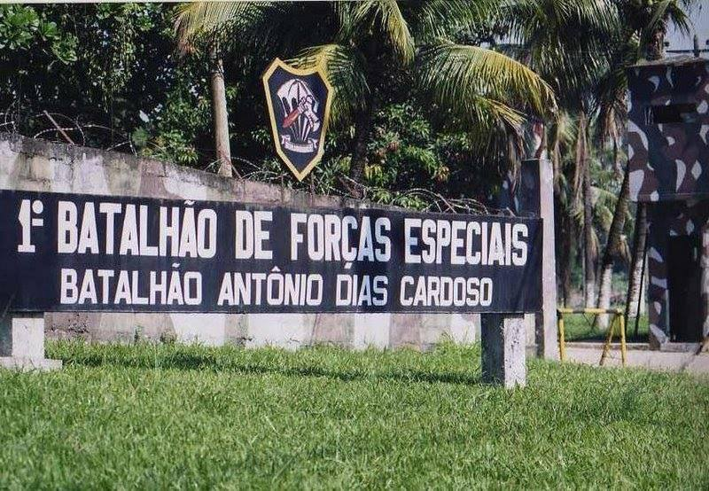
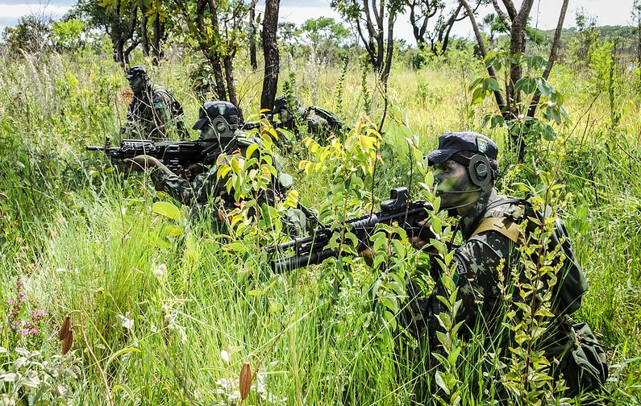
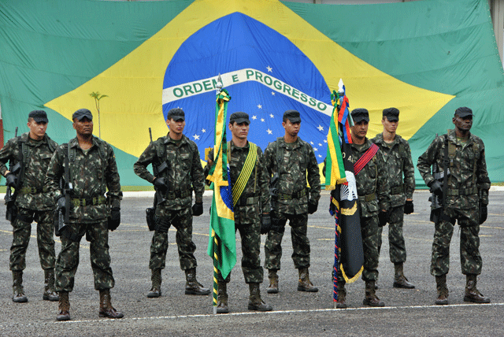
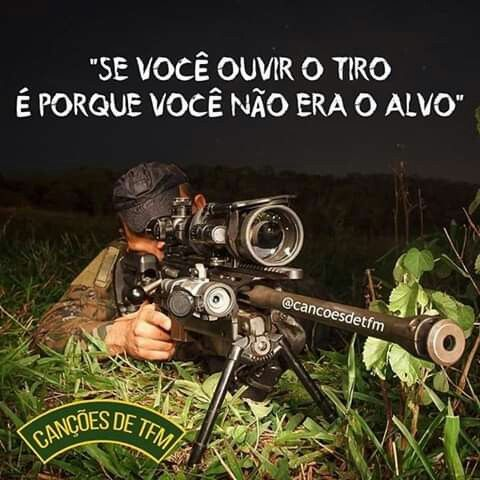

sobre min
Olá! Meu nome é lucas marques de freitas e sou um estudante de informática. Atualmente, estou aprendendo a desenvolver páginas na web utilizando as linguagens HTML e CSS na Way Cursos. Estou muito entusiasmado em aprender mais sobre programação e tecnologia, e espero poder utilizar essas habilidades no futuro para criar projetos incríveis e contribuir para a comunidade de desenvolvimento web. Sinta-se à vontade para navegar em meu portfólio e conferir alguns dos projetos que já desenvolvi até o momento. Obrigado pela visita!
História do 1° Batalhão de Forças Especiais
A campanha de libertação do nordeste, em 1630, é considerada o embrião das forças especiais no Brasil. Naquele contexto, Pernambuco estava sendo invadido por holandeses e o então Governador Geral, Diogo Luís de Oliveira, enviou o Sargento Antônio Dias Cardoso (Patrono das Forças Especiais), com elevado volume de armamento e técnicas inovadoras, para comandar uma tropa composta por indígenas, africanos, portugueses e brasileiros. Após outras diversas batalhas, em 1944, no contexto da 2ª Guerra Mundial, fica ainda mais evidente a necessidade da criação de uma tropa especializada em operações especiais. Somente em 1957, foi criado o 1° Curso de Operações Especiais do Exército. Anos depois, em 1968, foi criada a primeira unidade especializada: o Destacamento de Operações Especiais, sediado no Rio de Janeiro. Tal unidade era subordinada ao Centro de Instrução Paraquedista General Penha Brasil. Com uma demanda cada vez maior e sua crescente importância, o então Destacamento é elevado à categoria de Batalhão no final do século XX. Atualmente, o 1° Batalhão de Forças Especiais encontra-se em Goiás. Sua transferência ocorreu após a criação do Comando de Operações Especiais (C Op Esp), em 2004. Ocupa uma localidade estratégica no território brasileiro, haja vista a facilidade de locomoção para qualquer região do País, por estar em uma região centralizada.
Que tipo de missão é realizada pelo 1° Batalhão de Forças Especiais?
Realiza as mais diversas missões em território brasileiro e internacional, capaz de chegar em qualquer lugar da América Latina até 24 horas depois de solicitado. Dentre elas: Operações de busca; Combate e salvamento; Prevenção e combate ao terrorismo. Tal missão foi realizada em eventos internacionais, tendo como últimos exemplos no Brasil: a Copa do mundo de 2014 e Olimpíadas, em 2016; Guerra irregular; e Operações contra forças irregulares.
Qual é o equipamento utilizado?
O 1° Batalhão de Forças Especiais conta com equipamentos de ponta. Dentre as viaturas, destacam-se: VLEGA Gaúcho; VLEGA Chivunk As principais aeronaves empregadas nas missões, que geralmente lançam os militares para uma incursão mais rápida, são: C-105 Amazonas; C-95 Bandeirantes; EC-725 Caracal; Além desses, há também os equipamentos individuais e o armamento, dos quais destacam-se: Glock 17; Óculos de visão noturna; Morteiros; Lança foguetes AT-4 Fuzil M4A1 Fuzil Barrett M82
 